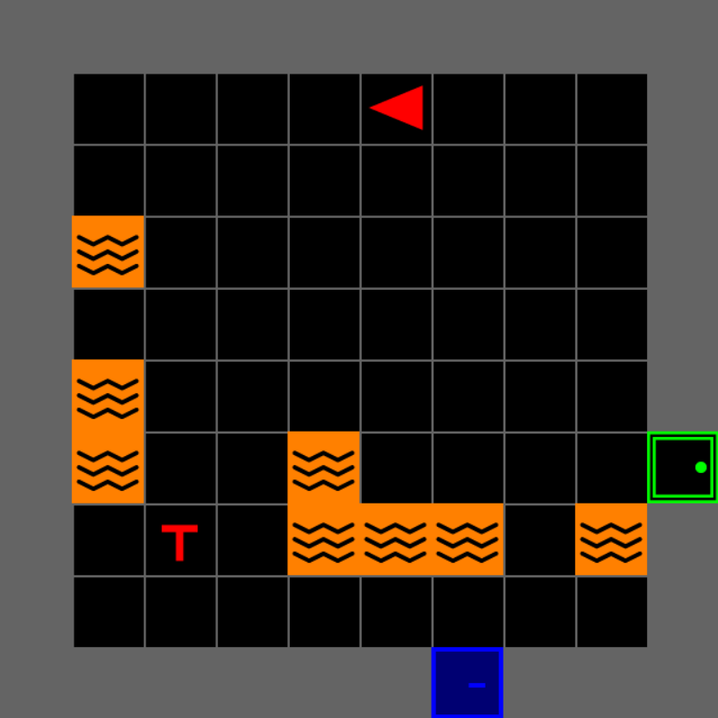

MOSAIC
A Modular Testbed for
Human–AI Collaboration
Hands-on tutorial · IEEE SMC 2026, Bellevue WA
iHuman Lab · Oklahoma State University
October 4, 2026
Part One
What MOSAIC is
What it is Install Use it
What Is MOSAIC?
A modular platform for human–AI collaboration research.
Configurable interactive environments, AI assistance, human interfaces, and synchronized data collection — built on MiniGrid.
Its first testbed is a search-and-rescue game: rescue survivors from a burning building before time runs out.
Many pieces, one picture.

Why Was MOSAIC Created?
What does a human–AI teaming study actually need?
- Decisions have to matter. A task you can solve alone measures nothing about teaming.
- Conditions have to be repeatable. Another lab should run your exact condition, not their approximation of it.
- Everything shares one clock. Human actions, AI advice, performance and sensor data are only comparable when timestamped together.
- Reconfiguring, not rebuilding. Your manipulation should be a setting, not a fork of the codebase.
Most testbeds manage two of these. MOSAIC is our attempt at all four at once.
The Search-and-Rescue Scenario

You — one operator, a building of rooms
Victims — and lookalike decoys
Lava — instant mission failure
Locked door — bring a key
Time and victim health both run down
The AI teammate
Navigate, search, discriminate, and finish before the clock or the survivors run out.
How Human–AI Collaboration Happens
1
Observe
The participant reads the room — what they can see, and what the mission still needs.
2
Decide
Act alone, or ask the AI teammate for advice.
3
Advise
The AI examines the current game state and answers in the chat panel.
4
Respond
They accept it, ignore it, or do something else entirely.
5
Record
Action, advice, outcome and sensor data — all on one clock.
Almost everything worth measuring lives in the gap between step 3 and step 4.
The Main Parts of MOSAIC
Environment
Rooms, victims, hazards, doors, rewards — and the rules of the mission
Human Interface
The game view, the controls, mission information, and the AI chat panel
AI Advisor
Scripted, LLM-based, or any other advisor a researcher defines
Experiment System
Configuration, sensors, logging, surveys, and replay
Four parts you can change one at a time — that is what modular buys you.
What Can MOSAIC Be Used For?
Interactive Mode
A human plays the search-and-rescue game on their own.
Human–AI Mode
The participant plays alongside an AI teammate they can ask for advice.
Experiment Mode
The complete study protocol, with sensing and logging throughout.
Programmatic Use
Scripted AI agents and Gymnasium-compatible experimentation, no GUI required.
Replay and Analysis
Review a recorded session frame by frame, against the exact world the participant saw.
Now that we understand the platform, let’s install it and run our first mission.
Part Two
Getting it running
What it is Install Use it
Install in Seven Lines
If you copy one slide today, copy this one.
Those last three lines are not optional — the next few slides explain why.
The rest of Part Two walks the same seven lines slowly, with a checkpoint after each one.
Before You Start
Python 3.10+
We test on 3.10. pyproject.toml still claims 3.8 — do not believe it.
Check this now — it is the one thing you cannot fix in the room
A Real Display
The game opens a window. SSH sessions, headless servers and Colab will not work for the GUI.
The environment itself runs headless fine — just not the interface
No API Key
Everything today works without one. The advisor falls back to a built-in stub.
Bring a key only if you want to see a real LLM answer
Step 1 · Clone and Isolate
Checkpoint — your prompt now starts with (.venv). If it does not, the next step installs into the wrong Python.
Ubuntu users: if you see ensurepip is not available, run sudo apt install python3-venv and repeat.
Step 2 · Install the Package
Checkpoint — look closely at that list. It installed both pygame and pygame-ce, and pygame landed last.
That is the bug. The next slide is the whole reason this section exists.
Step 3 · The One Trap
Try to launch the interface now and you get this:
pygame_gui needs pygame-ce; pyproject.toml asks for plain pygame. Both install into the same pygame namespace, and the loser gets shadowed.
--force-reinstall is required — uninstalling pygame guts the shared namespace, and plain pip install just says “already satisfied”.
Step 3 · What You Should See
You will also see ERROR: mosaic 0.1.0 requires pygame, which is not installed. — expected and harmless. That is pyproject.toml asking for the wrong package; pygame-ce satisfies it in practice.
One more undeclared dependency — the advisor’s prompt builder needs it, so Alt does nothing without it:
Checkpoint — this now prints GUI OK:
Both are known packaging issues — you are getting the workarounds ahead of the PyPI release.
Verify · 30 Seconds
Eight, not two — num_real_victims is per room, and a 2×2 building has four.
A line reading Timeout during mission generation: connect_all failed may appear. It is the level generator retrying — a warning, not an error.
If the Install Broke
| Symptom | Fix |
|---|---|
cannot import name 'DIRECTION_LTR' |
You skipped Step 3 |
module 'pygame' has no attribute 'surface' |
You ran Step 3 without --force-reinstall |
mosaic 0.1.0 requires pygame |
Harmless warning, not an error — carry on |
ensurepip is not available |
sudo apt install python3-venv, then remake the venv |
No module named 'mosaic' |
Outside the venv, or pip install -e . did not finish |
Still stuck? Raise a hand — we have helpers in the room and a spare laptop up front.
If the Game Broke
| Symptom | Fix |
|---|---|
| Window opens then closes instantly | You forgot env.reset() before launching the GUI |
| Nothing renders on a remote box | You need a real display — use a local machine |
Alt does nothing / Missing optional dependency 'tabulate' |
pip install tabulate |
| Hangs forever, no window | locked_room_prob=1.0 — back it off to 0.9 |
'FullviewCamera' object has no attribute 'reset' |
Known bug — use AgentFOVCamera or AgentConeCamera |
Timeout during mission generation |
Harmless — the generator retries |
Sampling rejected: unreachable object |
Harmless — it is placing objects somewhere else |
Part Three
Playing with it
What it is Install Use it
The Rules in 60 Seconds
The building — num_rows × num_cols rooms, each room_size tiles square. Some doors are locked and need a matching coloured key, and you can carry one key at a time.
The pressure — a step budget and a wall clock. Survivors lose health while you can see them. Lava is instant mission failure.
| Event | Reward |
|---|---|
| Rescue a live survivor | +1.0 |
| Pick up a decoy | −1.0 |
| Pick up a survivor who died | −2.0 |
| Complete the mission | +1.0 bonus |
Pressure is what makes advice worth taking — and worth measuring.
Survivors and Decoys

Top row — real survivors. Arms centred on the stem.
Bottom row — decoys. Stem offset from the centre.
Four orientations each, randomly assigned.
A classic visual discrimination task hiding inside a rescue mission — which is what makes false alarms measurable.
What’s on Screen
Game view · the camera’s crop of the world Info panel · mission status Chat panel · the advisor Screen edge · peripheral feedback
Controls
| Key | Action |
|---|---|
↑ |
Move forward |
← → |
Turn left / right |
Space |
Open a door |
Tab or Page Up |
Rescue (pick up) |
Left Shift or Page Down |
Drop the key you’re carrying |
Alt |
Ask the AI advisor |
Backspace · F11 · Esc |
Restart · Fullscreen · Quit |
The docs also list W for forward — it is not actually mapped. Use the arrow keys. Alt needs tabulate installed (Part 2, step 3).
Play a Mission
from mosaic.gui.main import SAREnvGUI
from mosaic.sar.env import build_sar_env
from mosaic.sar.placers import LavaPlacer, LockedRoomPlacer, VictimPlacer
env = build_sar_env(
screen_size=800,
num_rows=2, num_cols=2, # building is 2x2 rooms
room_size=8, # tiles per room
victim_placer=VictimPlacer(num_real_victims=2), # PER ROOM -> 8 total
lava_placer=LavaPlacer(lava_per_room=2),
locked_room_placer=LockedRoomPlacer(locked_room_prob=0.5),
)
env.reset() # never skip this
SAREnvGUI(env, config={"fullscreen": False, "max_time": 3}).run()Every argument above is a knob. The next four slides turn them.
Knob 1 — The Building
| Rooms | Survivors | Step budget | |
|---|---|---|---|
2×2 |
4 | 8 | 2,048 |
3×3 |
9 | 18 | 10,368 |
Occasionally you will see 17 instead of 18 — the generator rejects a victim it cannot find a reachable spot for, and the step budget scales with the count.
Notice how much longer a single mission takes — and how much more you would welcome a hint.
Knob 2 — The Hazards
More lava — the fastest route and the safe route stop being the same route. Watch your own planning change.
Nearly every room locked — with one key at a time, a rescue task becomes a key-management task.
Stop at 0.9. At 1.0 every room is locked, the level has no solvable layout, and the generator retries forever — the window never opens. Known bug.
Two numbers, two completely different cognitive demands.
Knob 3 — What They Can See

AgentFOVCamera
Current room only

AgentConeCamera
Forward cone only — search-heavy
The default is EdgeFollowCamera, which scrolls only when the agent nears the edge. FullviewCamera and AgentCenteredCamera raise AttributeError today — a known bug, they are missing a reset().
Knob 4 — What Mistakes Cost
Shifting the false-alarm penalty shifts the participant’s decision criterion — a payoff-matrix manipulation in one number.
The Same World Twice
Why two seeds?
env.reset(seed=...) seeds the room-and-door skeleton. The placers — survivors, lava, keys — still draw from Python’s global random, so without random.seed() you get a different world every run.
Seed both and the building is identical every time. Known bug, workaround today — compare maps with your neighbour.
Try This Now
Scale It Up
Set num_rows=3, num_cols=3 in labs/play.py and play again. Time yourself.
Knob 1 · how badly do you want a hint now?
Turn Up the Risk
LavaPlacer(lava_per_room=6). Watch your route planning change in real time.
Knob 2 · risk versus speed
Narrow the View
camera_strategy=AgentConeCamera(). A planning task becomes a search task.
Knob 3 · this is the big one
Race Your Neighbour
Both seed to 42, both play the identical building. Compare what you each did.
Reproducibility · random.seed(42) + env.reset(seed=42)
Where to Go Next
The most useful thing you can do today is tell us where it broke.
- Open an issue — install friction especially. Everything in Part 2 exists because someone hit it.
- Bring your paradigm — if your manipulation doesn’t fit the knobs, that’s a design bug on our side.
- Contribute a placer or an advisor — the smallest useful pull request is about thirty lines.
Repository github.com/iHuman-Lab/mosaic
Documentation ihuman-lab.github.io/mosaic
Today’s scripts labs/play.py · labs/tweak.py · labs/advisor.py

Thanks!
Questions?
bennett.dogbey@okstate.edu
Appendix
Backup slides — beyond the basics
Who We Are

Hemanth Manjunatha Principal Investigator
Brain–machine interfaces and human–robot interaction — what is happening in the operator’s head.

Elahe Oveisi PhD Student · MOSAIC author
Human factors in autonomous systems and aviation safety — when people take the advice.

Bennett Kwaku Dogbey PhD Student · Presenting
Safe autonomy and formal verification — when they should.
Meet the rest of the lab: ihuman-lab.github.io/lab-website
Three Design Choices That Make It Yours
Dependency Injection
Components are built first, then passed in — never subclassed, never looked up.
build_sar_env(victim_placer=MyPlacer())
A new world is a new object, not a new environment
Strategy Pattern
Interchangeable behaviours behind one interface — five cameras, one argument.
env.switch_camera(AgentConeCamera())
Change what participants see, even mid-session
Factory Functions
One call builds a fully wired object from parts you already made.
build_sar_env(...) · build_llm_client(...)
A condition is a function call you can put in a config
Your manipulation is a constructor argument. That is the whole design.
The Building Blocks, in Code
mosaic/
the contract
pip install -e .
core/
SARLevelGen on MiniGrid · five CameraStrategy classes · the Placer base
sar/
PickupVictimEnv · build_sar_env() · survivors and decoys · RescueAction · GameObservation
gui/
SAREnvGUI · InfoPanel · ChatPanel · EdgeVignette · User input
llm/
LLMClient · DummyLLMClient · prompt builder · pathfinding · reply parser
experiment/
one lab’s wiring
not packaged
Providers
llm.py — OpenAI and Gemini through llama_index
Study tuning
placers.py — health and decay by lava risk · pacing.py — the step budget
Instrumented run
game.py → LSL · sensors/ Tobii · replay.py · YAML configs
Contract lives in mosaic/, wiring lives in experiment/. Your study becomes a second experiment/ — not a fork.
What Gets Logged
Every step returns an enriched observation:
grid is a full integer-encoded snapshot of the world — walls, lava, survivors, decoys, doors with colour and lock state, keys.
The four cam_* fields come from the default EdgeFollowCamera. Swap to AgentConeCamera or AgentFOVCamera and they are absent — worth knowing before you write the analysis.
Which is why a session can be replayed exactly, without re-running the environment.
The Advisor Contract
That is the whole interface. It knows nothing about SAR, prompts, the GUI, or your conditions.
Anything with a query method is a teammate — GPT, Gemini, a rule, a human confederate behind a socket.
An Advisor With a Reliability Dial
Advice is correct with probability p_correct — and every call records whether it was.
import random
from mosaic.llm.client import LLMClient
class ScriptedAdvisor(LLMClient):
def __init__(self, p_correct=1.0, seed=0):
self.p_correct, self.rng, self.log = p_correct, random.Random(seed), []
def query(self, prompt: str) -> str:
correct = self.rng.random() < self.p_correct
heading = self.rng.choice(["north", "south", "east", "west"])
advice = (f"Head {heading} — there's a survivor in the next room."
if correct else
f"Nothing {heading} of you. Hold position and search here.")
self.log.append({"correct": correct, "advice": advice})
return advicePlug It In
Press Alt in the game. Advice appears in the chat panel, and advisor.log holds the ground truth for every piece of it.
You now have advice reliability as an independent variable, with per-trial ground truth for the analysis.
What That Buys You
Reliance
Did they follow advice they should have ignored — and ignore advice they should have followed? advisor.log tells you which was which.
Compliance, over- and under-reliance
Trust Repair
Drop p_correct mid-session, then raise it again. Watch reliance recover — or not.
Reliance over time, after a failure
Latency
Add a time.sleep in query. Slow advice is a manipulation, not a bug.
Advice uptake against delay
Adaptive Guidance
Make p_correct a function of the participant’s own performance so far.
Calibration under adaptation
The Full Protocol
Before
1 · Eye-tracker calibration
Tobii — skipped automatically if there is no tracker
2 · Visual search
Baseline attention
3 · Multi-object tracking
Baseline tracking capacity
During
4 · Tutorial
Single-room practice, same controls
5 · Main SAR mission
With the AI advisor, streamed over LSL frame by frame
After
6 · SART
Situation awareness
7 · NASA-TLX
Perceived workload
One runner drives all seven phases — baselines, the mission, and the surveys land in one session.
Synchronized Instrumentation
Every frame of the main mission is streamed over Lab Streaming Layer as one record:
- Full grid state, agent pose, camera bounds
- Action taken and reward received
- Advice text, with request and response timestamps
- Gaze coordinates from the Tobii bridge
- Participant ID, trial number, condition order
One clock. One file. Areas-of-interest analysis afterwards, against the exact frame the participant saw.
Where MOSAIC Is Headed
PyPI Release Next
pip install mosaic with no clone and no dependency workaround — Part 2 of this tutorial gets three slides shorter.
Fixes the pygame-ce trap
Gymnasium Registration Next
gym.make("MOSAIC-SAR-v0") for the RL side of the room. The environment is already Gymnasium-compatible.
Train agents on the same task people play
JOSS Submission Next
A citable software paper, with the API and docs to match.
Something to cite in your methods section
Beyond SAR Later
The same modular pieces — environment, interface, advisor, sensing — in other collaborative domains.
Same blocks, a new task

MOSAIC Tutorial · iHuman Lab · Oklahoma State University